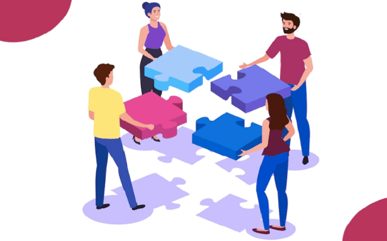

Aunque las redes sociales ayudan a mantener el contacto con amigos y familiares, también han cambiado la forma en que se establecen y mantienen las relaciones personales. El concepto de “amigo” en línea es muy diferente al de una amistad real, ya que muchas veces se basa en interacciones superficiales. Esto puede hacer que las relaciones sean menos profundas, aunque por otro lado permite conocer a personas de todo el mundo y ampliar el círculo social.
